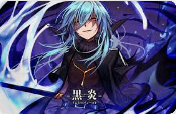

It's simple. I want to create a world where life is as convenient as I wish it to be. A comfortable world where everyone can laugh and enjoy their lives as much as possible. That's what I truly and honestly want.
Ideals without power are nonsense, and power without ideals is empty, right?
I'm a greedy guy, but I don't have an interest in seeking power just for the sake of power
 Ideals without power are nonsense, and power without ideals is empty, right?
Ideals without power are nonsense, and power without ideals is empty, right?